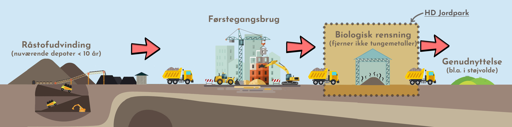

I hverdagen sender du nok ikke mange tanker afsted til den jord der ligger under dine fødder, dit og naboens hus, indkøbscenteret og resten af Danmarks infrastruktur. Men det burde du måske, for jord er en vigtig ressource der er under stigende pres.
Lad os kort starte med, hvad jord er. Du tænker måske jord bare er det du køber i plantecenteret til din monstera, og det er det måske også for den gængse forbruger, men inden for jord- og byggebranchen dækker begrebet jord over alt fra muldjord (det er det du bruger til din monstera) til ler og stabilgrus. Og det er især sidstnævnte der er begyndt at komme under stigende pres, grundet knaphed og forurening.
Vi er to design-ingeniørstuderende fra Aalborg universitet, Astrid og Christoffer, der i denne blog vil prøve at dykke ned i det nuværende paradigme i jord branchen, og se på dets bæredygtighedsperspektiver. Bloggen er opstået ud fra vores samarbejde med HD Jordpark.


I HD Jordpark. modtages der jord, byggematerialer og organisk affald, som de så vidt muligt genanvender. Modtages der forurenet jord, skal det oprenses. Det gør de ved hjælp af bakteriekulturer, der “spiser” forureningen. På billedet ses en model for jordens rejse, hvor HD jordparks arbejde er markeret med gult.

I dette første blogindlæg, vil vi se på hvilke kontroverser der er mellem de implicerede aktører, og se på hvordan de problematiserer den nuværende måde at behandle jord på. Diskussionen vil tage udgangspunkt i et Multi-level perspective (MLP) perspektiv.
I MLP beskæftiger sig med 3 kernebegreber: landskab, regimer og nicher.
Aktører der tror og opererer inden for den eksisterende viden (paradigme), er aktører regimet (det etablerede sociotekniske system).
Aktører der udfordrer regimet og det etablerede paradigme, betragtes i MLP som værende del af en niche. En niche er deraf et alternativt sociotekniske system, der prøver at fremme et nyt paradigme, dvs. en ny viden. Inden for MLP vil regimer altid betragtes som ubæredygtige, og nicher som den bæredygtige konkurrent.
Om en niche for mulighed for, at overtage regimets plads, afhænger af rammerne for det sociotekniske system. Rammerne betegnes som landskabet. En ændring i landskabet, vil skabe en plads/splittelse i regimet, der giver nichen mulighed for at overtage. (Geels, 2012)
Jord, og især grus, er på vej til at blive en knap ressource. Det er blevet populært at bo i byerne og samtidig er der kommet et kraftigt politisk fokus på folkesundhed. Derfor skal industrien ud af byen, og de mange tidligere industriområder omdannes i dag til lukrative boligområder. De tidligere tiders mere laissez fair tilgang til håndtering af kemikalier, betyder dog, er det oftere er reglen end undtagelsen, at disse grunde er stærkt forurenede. Samtidig er al jord i byområder i dag, grundet indirekte forurening, primært fra trafik, klassificeret som lettere forurenet. Dette kan ses på kortet nedenfor.
Figur 1.2 - Forurenede grunde på Fyn - Formode og kendte1
Sammen med fokusset på folkesundhed, har dette skabt et behov for at grave forurenet jord væk og fylde op med ren jord. Dette har medført et regime, der med udgangspunkt i 50 cm-reglen, bygger på en udbredt “ude af øje - ude af sind”-tilgang. Når der i dag graves ud til nye boliger, eller anlægges rekreative områder måles jorden for human toksikologiske stoffer. Overskrider den visse grænser værdier graves den forurenede jord op, og der lægges derefter minimum 50 cm ren, ny opgravet jord oven på. Den forurenede jord bliver i høj grad deponeret eller kørt til nyttiggørelse i eksempelvis støjvolde eller til havne-opfyld. Således er jorden stadig forurenet, men vil ikke være gene for mennesker, dyr og insekter ikke inkluderet - Deraf en “ude af øje - ude af sind”-tilgang. Dette har været medvirkende til at skabe stort behov for ren, ny opgravet rent jord, og gøre det til en svindende ressource.
Samtidig er regimet er stærkt styret af økonomi, da branchen udelukkende vælger leverandør efter pris. Al fokus på bæredygtighed tager deraf udgangspunkt i økonomisk vinding.
I jord branchen er landskabet ved at ændre sig. Først og fremmest er jord som tidligere nævnt lokalt en svindende ressource. Det øger transportafstanden og presser priserne på ren jord op, og gør markedet for genanvendt jord mere lukrativt. Samtidig har samfundet fået en større bevidsthed om vigtigheden i bæredygtige valg. Dette afspejler sig i politiske ønsker om, at genanvendelsen i byggebranchen skal øges. Der er opstået certificeringer, der belønner aktører i byggebranchen der har øget fokus på bæredygtighed, og som de kan bruge til at brande sig på, og skille sig ud fra deres konkurrenter. En af disse certificeringer er DGNB2, der stiller krav til en højere grad af genanvendelse af jord i byggeprojekter.
I respons til det skiftende landskab, er nogle jordparker begyndt at kigge på investering i mekanisk rensning af jord. I dag renses jord kun ved biologisk rensning, der fjerner organiske forbindelser, men ikke tungmetaller. Mekanisk rensning, i form af jordvask, er en velafprøvet teknologi, der allerede er implementeret i andre lande. Her “vaskes” jorden, hvorved der hurtigt og effektivt fjernes både organiske forbindelser og tungmetaller. Kigger vi på jordvask ud fra en lineær models synspunkt, der argumenterer for at en overlegen teknologi altid vil overtage den gamle teknologi, kan man undre sig over, at teknologien ikke allerede er implementeret i Danmark (Her kunne vi godt tænke os en reference - Vi har det fra Andre).
Kigger man derimod på det gennem MLP, der argumenterer for, at enhver teknisk innovation skal passe ind i noget større for at give mening, og for at kunne fungere, begynder det måske at give mening. Regimet indbyggede træghed over forandring, og dets store fokus på profit, har indtil videre ikke givet plads til mekanisk rensning på det danske marked. De førnævnte ændringer i landskabet, er med til at skabe en kløft i det nuværende regime.Hvornår og om denne kløft vil skabe plads til at mekanisk rensning får en plads, og på sigt vil blive den gængse metode for jordrensning må tiden vise.
Det kan diskuteres om mekanisk rensning fundamentalt adskiller sig fra det nuværende regime, og derfor kan betegnes som en niche, eller om det spiller ind i det nuværende regime. Mekanisk rensning ændrer ikke på, at hovedfokusset i branchen stadig vil være på profit. På den anden side, vil jordbranchen blive et cirkulært system, og “ude af øje - ude af sind”-tilgangen vil blive brudt.
Om mekanisk rensning er en niche eller en pseudo niche, vil vi lade være op til læseren.
1 https://www.dingeo.dk/kort/jord/
2 DGNB - Deutsche Gesellschaft für Nachhaltiges Bauen, german sustainable building council
Geels, F. (2012). A socio-technical analysis of low-carbon transitions: introducing the multi-level perspective into transport studies. Journal Of Transport Geography, 24, 471-482. doi: 10.1016/j.jtrangeo.2012.01.021
Astrid & Christoffer - Marts 25, 2021